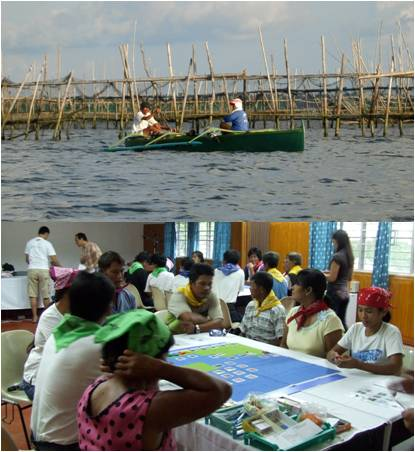

|
ReefGame: a role-playing game to explore livelihood alternatives in traditional fishing communities in Bolinao (Philippines)D. Cleland, A. Dray, P. Perez, A. Trinidad, R. GeronimoObjectivesReefGame is part of the work being done by the Modelling and Decision Support group of the Coral Reef Targeted Research Project. The game aims to increase understanding of fishers behaviour and livelihood choices in the context of declining marine resources and coral reef degradation for both researchers and fishers themselves. The game setting engages fishers in lively discussions and reflections about available options that would secure both their daily needs and the long-term sustainability of the reefs. Description of the game The game is supported by two identical boards representing a virtual coastal area with an offshore island. Information available on the board is: the natural habitat (mangrove, seagrass, and coral) and the players home. An Agent Based Model (ABM) of the game is run during the playing sessions to compute and deliver fishing catches, players incomes and habitat transitions.10 paired players are allocated on each board and take the role of fisherman
and head of family. Players profile includes number of members in his
household, income needs and boat type. Each players objective is to provide
enough food for his/her family through fishing and/or extra activity incomes. The game is divided into 5 steps, each one being played for 1 to 4 rounds.
The first step is dedicated to fishing procedures. The second step introduces
alternative livelihood procedures while the third step focuses on household
procedures. Fourth and fifth steps aim to explore respectively Marine
Protected Areas and Tourism activities. Debriefing sessions are held between
steps to capture players decisions and understanding of the game. An
important final debriefing stage is then dedicated to collective analysis
of the situation and proposals for new scenarios. Use of the gameThe game has been played once during a 1-day workshop involving 20 participants, 13 men and 7 women, belonging to fishing communities from the Bolinao province. The experience is to be replicated in other fishing communities as well as in an academic context (learning tool for students). SoftwareYou can download the Cormas model source code as a folder to be able to run the model with cormas or as a listing. ReferenceFor more information, contact the corresponding author |